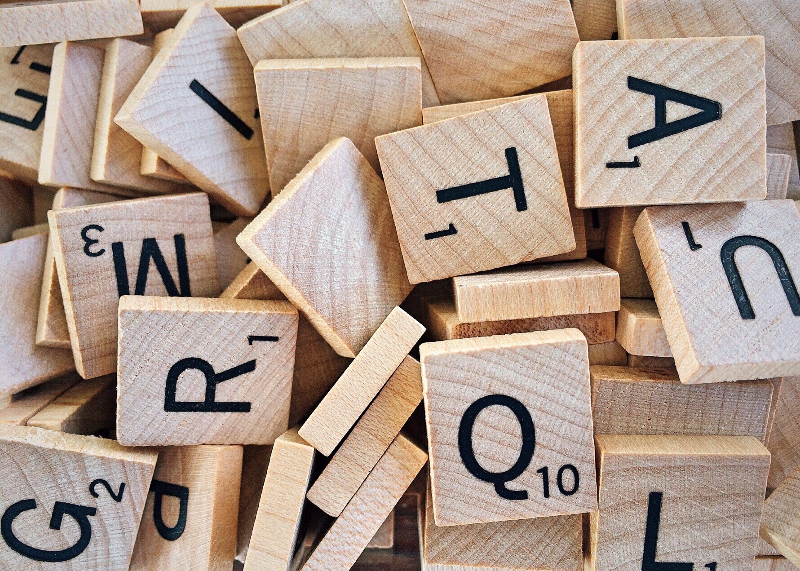
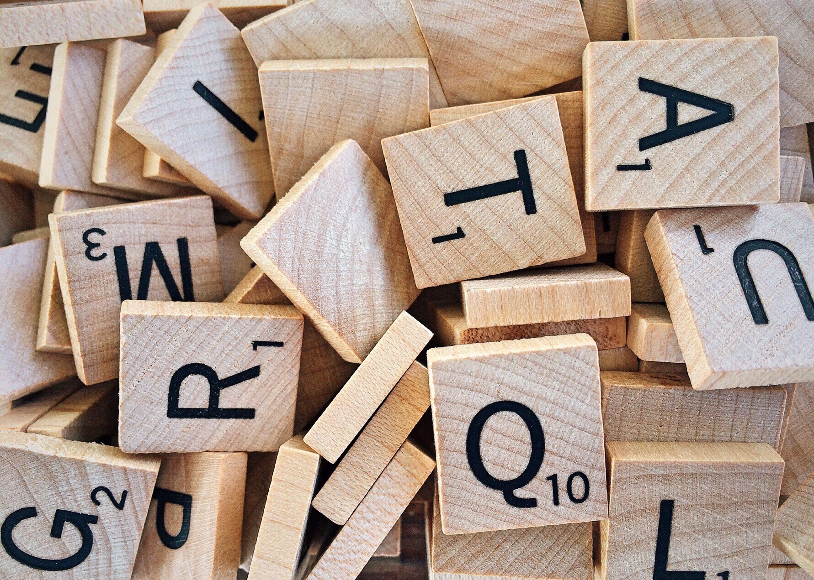

In the early 20th century, the Hudson River Mill was one of the company's largest plants and served both as its principal office, and a place where paper workers helped shape the direction of the industry's early labor movement.
After World War II, Hudson River Mill workers developed and perfected the production of coated papers for the company. Shifting economic forces resulted in the mill's closure in November 2002. The historic mill was slated for demolition in 2011.
After World War II, Hudson River Mill workers developed and perfected the production of coated papers for the company. Shifting economic forces resulted in the mill's closure in November 2002. The historic mill was slated for demolition in 2011.
Don't be fooled -
Most recycled paper products on the market labeled "RECYCLED" contain little or no Post Consumer Waste(PCW) paper, only wood chips and mill scraps. These "RECYCLED" paper products do little to address the environmental concerns of deforestation and landfilling reusable waste paper. Trees should be cut down to make wood and paper should be made back into paper instead of landfilling it. The "Real" recycled is Post Consumer Waste(PCW) which is paper used once and taken to recycling centers and then mills to be made back into paper. PCW is NOT mill scraps and high PCW products is the sustainable and most environmental choice.

 
